Single cell RNA-Seq
Introduction and Quality Control
Kristen Wells
RNA Bioscience Initiative | CU Anschutz
2026-03-27
Learning key
We will switch between lecture and your exercise qmd.
To denote a slide that corresponds to your exercise, I will include ⌨️ in the slide title
Learning Objectives
Lecture 1
Identify key quality control issues with single cell RNA-seq data and perform filtering to exclude poor quality cells
Interact with single cell data using Bioconductor tools
Lecture 2
Perform analysis to identify cell types in single cell data by using unsupervised clustering methods and comparing to public datasets
Describe the importance and reasoning for conducting each step of the analysis
Single cell or bulk?
Single cell
High level overview of general transcriptomic landscape of genes that are expressed highly at the single cell level
Sequencing depth is low per cell so we only have confident detection of highly expressed genes
Differential expression is less well developed to compare different conditions
Most techniques only capture the 5’ or 3’ end
Good for identifying subpopulation of cells that change between conditions
Doesn’t require prior knowledge of surface proteins to sort out a population
Doesn’t average across all cells in the experiment
Bulk
Global overview of transcriptomic landscape of an entire sample using high to low expressed genes.
Sequencing depth is much deeper so there is higher confidence to detect mid to low range expression
Good for novel transcript identification and assessing how global transcriptome changes between conditions
Captures full RNA molecule so can be used for RNA-splicing analysis
Doesn’t work for subpopulation analysis
All cells are averaged so determining what is happening to one cell type is challenging
Are your results because of a transcriptomic change or a change in cell type frequencies?
Single cell sequencing
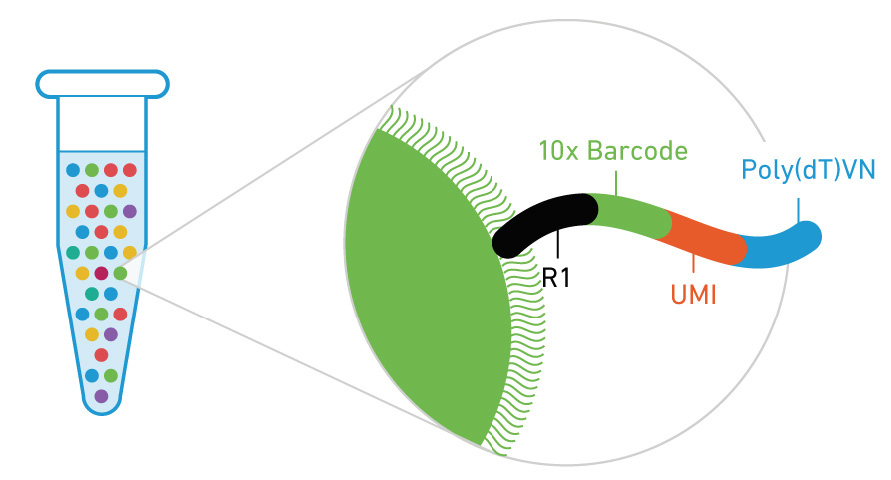
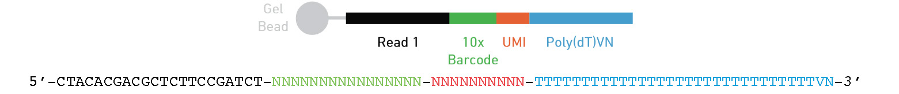
Where is the barcode and UMI?
Below is the design for the 3’ 10x genomics assay
Other assays may have different locations of there cell barcode and UMI.
These may also be different lengths.
Or even on read 2 (ex Parse bioscience).
Be sure to check what kit was used to prep your data and always perform sanity checks throughout the analysis!
Library prep
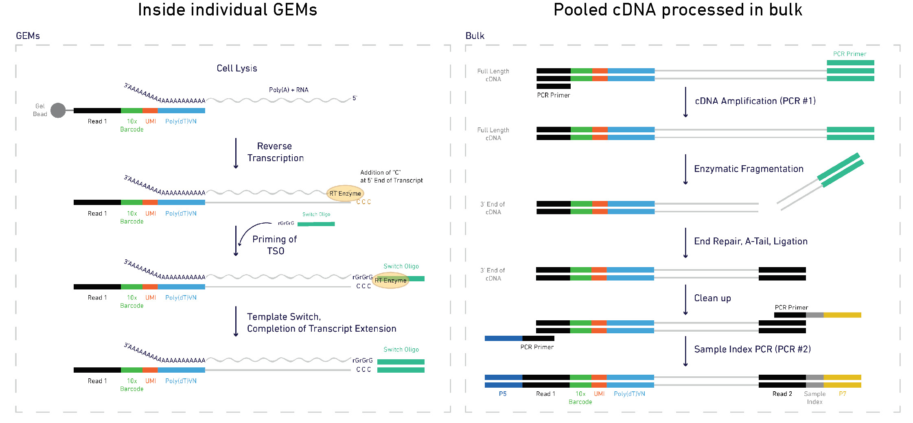
Other single cell methods
droplet-based scRNA-seq: e.g. 10x Genomics or Drop-Seq
Smart-seq based scRNA-seq: (bulk-RNA-seq on single cells in individual wells/tubes)
CITE-Seq : gene expression + cell surface protein abundance
VDJ-Seq : Gene expression + targeted sequencing of T-Cell and B-Cell receptors
Many others: ATAC, spatial transcriptomics, DNA sequencing, etc. (see Integrative Single cell analysis )
Overview of analysis steps
flowchart TB
%% Green nodes
cr["Process FASTQ to UMI count matrix<br/>(Cellranger, Alevin, or STARsolo)"]
%% Blue nodes
cell_qc["QC cells<br/>(% mitochondrial UMIs,<br/># of UMIs/Genes,<br/>remove empty droplets)"]
norm["Normalize UMI counts<br/>(Normalize by deconvolution)"]
markers["Discover cell type markers"]
annot["Annotate cell types"]
%% Yellow nodes
feature["Identify variable genes<br/>(a.k.a Feature selection)"]
dim_red["Dimensionality reduction (PCA)"]
cluster["Clustering<br/>(using Shared Nearest Neighbors)"]
viz["Make 2D-Visualization<br/>(PCA, UMAP, tSNE<br/>Force-directed graph)"]
traj["Trajectory Inference<br/>(Slingshot,<br/>PAGA, scVelo)"]
%% Orange nodes
downstream["Downstream analysis<br/>(Differential expression,<br/>Shifts in cell type composition,<br/>Find new cell-types/states)"]
%% Main workflow connections
cr --> cell_qc
cell_qc --> norm
norm --> feature
norm --> markers
feature --> dim_red
dim_red --> cluster
dim_red --> traj
dim_red --> viz
cluster --> markers
markers --> annot
%% Feedback loops (dashed grey)
annot -.-> cell_qc
annot -.-> feature
annot -.-> dim_red
annot -.-> cluster
annot --> downstream
%% Edge labels
cr -.-|"Load into<br/>SingleCellExperiment"| cell_qc
annot -.-|"Repeat<br/>as needed"| cell_qc
%% Color styling
classDef green fill:#009E73,stroke:#000,stroke-width:2px,color:#000
classDef blue fill:#56B4E9,stroke:#000,stroke-width:2px,color:#000
classDef yellow fill:#F0E442,stroke:#000,stroke-width:2px,color:#000
classDef orange fill:#E69F00,stroke:#000,stroke-width:2px,color:#000
class cr green
class cell_qc,norm,markers,annot blue
class feature,dim_red,cluster,viz,traj yellow
class downstream orange
From raw reads to a UMI count matrix
Alevin
$ salmon -h salmon v1.3.0Usage: salmon -h | --help orsalmon -v | --version orsalmon -c | --cite orsalmon [-- no - version - check ] < COMMAND> [-h | options] Commands: index : create a salmon indexquant : quantify a samplealevin : single cell analysis # <------ swim : perform super-secret operationquantmerge : merge multiple quantifications into a single file
Alevin
$ salmon index ...$ salmon alevin-l ISR # library type -1 read1.fastq.gz # reads -2 read2.fastq.gz # reads --chromiumv3 # chemistry -i /path/to/salmon/index # index path -o /path/to/output # output --tgMap transcript_to_gene.tsv
Alevin output files
$ls alevin/alevin.log # run info featureDump.txt # info on each cell barcode quants_mat.gz # binary file with UMI counts quants_mat_cols.txt # genes in count matrix quants_mat_rows.txt # cell barcodes in count matrix quants_tier_mat.gz # info about mapping for each gene whitelist.txt # valid barcodes discovered by alevin
QC: cell or empty droplet?
In a typical droplet scRNA-seq experiment 100k - 1M cell barcodes are detected, but only 1-10k cells are loaded
Most of these droplets are “empty” and contain very few reads.
What is the source of these reads in the “empty” droplets?
How do we determine if the data from a particular cell barcode is derived from a single cell?
library (alevinQC)<- readAlevinQC (baseDir = here ("data/block-rna/scrna/pbmc" )<- alevin$ cbTableggplot (aes (ranking, originalFreq)+ geom_point (size = 0.1 ) + scale_x_log10 (labels = scales:: comma, breaks = c (10 , 1000 , 10000 , 100000 )) + scale_y_log10 () + labs (x = "Barcode rank" ,y = "Barcode frequency"
QC: cell or empty droplet?
<- max (cell_counts$ ranking[cell_counts$ inFirstWhiteList])ggplot (cell_counts, aes (ranking, originalFreq)) + geom_point (size = 0.1 ) + scale_x_log10 (labels = scales:: comma, breaks = c (10 , 1000 , 10000 , 100000 )) + scale_y_log10 () + geom_vline (xintercept = frst_dev) + labs (x = "Barcode rank" ,y = "Barcode frequency"
Fit a curve to the observed data and identify point where first derivative is minimized.
Any barcodes less than the “knee”, test sequences for off-by-one errors against the barcodes above the knee.
Take top half of cells above the knee and train a classifier using multiple criteria (% mapping, % mitochondrial and rRNA reads, duplicate rate, …)
Classify ambiguous cells in lower half into likely cells or not.
QC: Cell or empty droplet?
Good data
ggplot (cell_counts, aes (ranking, originalFreq)) + geom_point (aes (color = inFinalWhiteList), size = 0.1 ) + scale_x_log10 (labels = scales:: comma, breaks = c (10 , 1000 , 10000 , 100000 )) + scale_y_log10 () + labs (x = "Barcode rank" ,y = "Barcode frequency" ,color = "Cell"
Cell calling sanity check
It’s always a good think to sanity check your data
After calling cells, how can we perform a sanity check?
I once reanalyzed data from a published paper and found that they had treated two separate sequencing runs as two separate captures. If this happens to you, what is a quick and easy way to make sure you treated your data correctly at the cell calling step?
Doublets and Multiplets
Doublets are not clearly identifiable using simple QC metrics, so cannot be reliably removed with filtering with # of UMIs or genes detected.
scran::doublet_cluster : Compare each cluster to an in silico mix of two other clusters. Get per cluster score of likelihood of being a doublet.
scran::doublet_cell : Compare each cell to a mix of two other randomly selected cells. Get per cell score of likelihood of being a doublet.
Doublets can also arise due to sample prep, e.g. incomplete generations of a single cell suspension. These doublets are difficult to exclude from the data
Turning to our exercise ⌨️
Before jumping into the analysis, let’s step back and start running through the exercise for today
Start by loading in the packages
library (here)library (scran)library (scater)library (SingleCellExperiment)library (DropletUtils)library (tximport)library (Matrix)library (AnnotationHub)library (eds)
Raw data: the UMI count matrix ⌨️
scRNA-seq libraries produce reads from 100,000 - 1,000,000 cell barcodes
A matrix of 20,000 genes x 1,000,000 barcodes is 20 billion values (!).
>95% are zeros due to empty droplets and the low efficiency of the library prep (< 10-20% of RNA captured).
<- c (0 ,0 ,0 ,2 ,0 ,0 ,1 ,0 ,0 ,0 ,0 ,0 ,0 ,0 ,0 ,0 ,0 ,0 ,0 ,1 ,0 ,0 ,0 ,0 ,0 <- matrix (vals, ncol = 5 )
[,1] [,2] [,3] [,4] [,5]
[1,] 0 0 0 0 0
[2,] 0 1 0 0 0
[3,] 0 0 0 0 0
[4,] 2 0 0 0 0
[5,] 0 0 0 1 0
V1 V2 V3 V4
Min. :0.0 Min. :0.0 Min. :0 Min. :0.0
1st Qu.:0.0 1st Qu.:0.0 1st Qu.:0 1st Qu.:0.0
Median :0.0 Median :0.0 Median :0 Median :0.0
Mean :0.4 Mean :0.2 Mean :0 Mean :0.2
3rd Qu.:0.0 3rd Qu.:0.0 3rd Qu.:0 3rd Qu.:0.0
Max. :2.0 Max. :1.0 Max. :0 Max. :1.0
V5
Min. :0
1st Qu.:0
Median :0
Mean :0
3rd Qu.:0
Max. :0
Sparse matricies ⌨️
Use the as function to convert to a sparse matrix
<- as (m, "sparseMatrix" )# alternatively # Matrix(vals, nrow = 5)
5 x 5 sparse Matrix of class "dtCMatrix"
[1,] . . . . .
[2,] . 1 . . .
[3,] . . . . .
[4,] 2 . . . .
[5,] . . . 1 .
This only stores non-zero values
Internally, values are stored as a row column value triplet
5 x 5 sparse Matrix of class "dtCMatrix", with 3 entries
i j x
1 4 1 2
2 2 2 1
3 5 4 1
Sparse matricies ⌨️
Functions at manipulate matricies (rowMeans, colSums, apply, [) can be used on sparseMatricies as long as the Matrix package is loaded.
How can we extract the first 2 rows and first 3 columns of the sparse matrix sm that we generated above?
Sparse matricies ⌨️
Functions at manipulate matricies (rowMeans, colSums, apply, [) can be used on sparseMatricies as long as the Matrix package is loaded.
How can we extract the first 2 rows and first 3 columns of the sparse matrix sm that we generated above?
# print subset of sm 1 : 2 , 1 : 3 ]
2 x 3 sparse Matrix of class "dgCMatrix"
[1,] . . .
[2,] . 1 .
Sparse matricies ⌨️
How can we calculate the sum of the columns of sm?
Sparse matricies ⌨️
How can we calculate the sum of the columns of sm?
# find column sums of sparse colSums (sm)
Base R subsetting ⌨️
Basic R concepts for subsetting and referencing columns are important in single cell analysis
Vectors can be subset by index (position), logical vector (c(TRUE, FALSE)) or name (if vector is named)
[1] "a" "b" "c" "d" "e" "f" "g" "h" "i" "j" "k" "l" "m" "n"
[15] "o" "p" "q" "r" "s" "t" "u" "v" "w" "x" "y" "z"
# extract 2nd, 4th, and 6th entry c (2 , 4 , 6 )]
Base R subsetting ⌨️
# subset by creating logical vector <- c ("a" , "e" , "i" , "o" , "u" )<- letters %in% vowels
Base R subsetting ⌨️
# name the letters vector with uppercase LETTERS names (letters) <- LETTERS# subset by name c ("A" , "Z" )]
Base R subsetting ⌨️
Matrices are 2 dimensional vectors and have similar subsetting rules except there are two dimensions, rows and columns.
matrix[rows_to_subset, columns_to_subset]
<- matrix (1 : 24 , nrow = 6 )# extract 2nd, 4th, and 6th row c (2 , 4 , 6 ), ]
[,1] [,2] [,3] [,4]
[1,] 2 8 14 20
[2,] 4 10 16 22
[3,] 6 12 18 24
Base R subsetting ⌨️
# extract 2nd and 4th column c (2 , 4 )]
[,1] [,2]
[1,] 7 19
[2,] 8 20
[3,] 9 21
[4,] 10 22
[5,] 11 23
[6,] 12 24
Base R subsetting ⌨️
# first 3 rows and 2nd and 4th column 1 : 3 , c (2 , 4 )]
[,1] [,2]
[1,] 7 19
[2,] 8 20
[3,] 9 21
Base R subsetting ⌨️
# extract rows with totals > 50 rowSums (m) > 50 , ]
[,1] [,2] [,3] [,4]
[1,] 4 10 16 22
[2,] 5 11 17 23
[3,] 6 12 18 24
Base R subsetting ⌨️
# extract columns with minimum values < 8 colMins (m) < 8 ]
[,1] [,2]
[1,] 1 7
[2,] 2 8
[3,] 3 9
[4,] 4 10
[5,] 5 11
[6,] 6 12
Base R subsetting ⌨️
The base R data.frame and Bioconductor DataFrame can also be subset with the [ and we can reference individual vectors in a data.frame using $.
# first 3 rows and columns of mtcars data.frame 1 : 3 , 1 : 3 ]
mpg cyl disp
Mazda RX4 21.0 6 160
Mazda RX4 Wag 21.0 6 160
Datsun 710 22.8 4 108
Base R subsetting ⌨️
# columns can be referenced using $, which extracts a vector $ mpg
[1] 21.0 21.0 22.8 21.4 18.7 18.1 14.3 24.4 22.8 19.2 17.8
[12] 16.4 17.3 15.2 10.4 10.4 14.7 32.4 30.4 33.9 21.5 15.5
[23] 15.2 13.3 19.2 27.3 26.0 30.4 15.8 19.7 15.0 21.4
Base R subsetting ⌨️
# columns can be generated or overwritten using $ with assignment $ new_column_name <- "Hello!" $ wt <- mtcars$ wt * 1000 # We can subset using logical vectors # E.g. filter for rows (cars) with mpg > 20 $ mpg > 20 , ]
mpg cyl disp hp drat wt qsec vs am
Mazda RX4 21.0 6 160.0 110 3.90 2620 16.46 0 1
Mazda RX4 Wag 21.0 6 160.0 110 3.90 2875 17.02 0 1
Datsun 710 22.8 4 108.0 93 3.85 2320 18.61 1 1
Hornet 4 Drive 21.4 6 258.0 110 3.08 3215 19.44 1 0
Merc 240D 24.4 4 146.7 62 3.69 3190 20.00 1 0
Merc 230 22.8 4 140.8 95 3.92 3150 22.90 1 0
Fiat 128 32.4 4 78.7 66 4.08 2200 19.47 1 1
Honda Civic 30.4 4 75.7 52 4.93 1615 18.52 1 1
Toyota Corolla 33.9 4 71.1 65 4.22 1835 19.90 1 1
Toyota Corona 21.5 4 120.1 97 3.70 2465 20.01 1 0
Fiat X1-9 27.3 4 79.0 66 4.08 1935 18.90 1 1
Porsche 914-2 26.0 4 120.3 91 4.43 2140 16.70 0 1
Lotus Europa 30.4 4 95.1 113 3.77 1513 16.90 1 1
Volvo 142E 21.4 4 121.0 109 4.11 2780 18.60 1 1
gear carb new_column_name
Mazda RX4 4 4 Hello!
Mazda RX4 Wag 4 4 Hello!
Datsun 710 4 1 Hello!
Hornet 4 Drive 3 1 Hello!
Merc 240D 4 2 Hello!
Merc 230 4 2 Hello!
Fiat 128 4 1 Hello!
Honda Civic 4 2 Hello!
Toyota Corolla 4 1 Hello!
Toyota Corona 3 1 Hello!
Fiat X1-9 4 1 Hello!
Porsche 914-2 5 2 Hello!
Lotus Europa 5 2 Hello!
Volvo 142E 4 2 Hello!
Read in Alevin output with tximport
Now that we know how to work with a sparse matrix, let’s read in our data
tximport has methods for importing the binary data from alevinWe need to supply a path to the quants_mat.gz file.
If you want to load multiple samples use iteration approaches (e.g. lapply, purrr::map, a for loop).
Also note that the eds
We will load in data from a 10x Genomics scRNA-seq library generated from human periperhal blood mononuclear cells (PMBCS).
Read in Alevin output with tximport ⌨️
library (tximport)<- tximport (here ("data/block-rna/scrna/pbmc/alevin/quants_mat.gz" ),type = "alevin"
importing alevin data is much faster after installing 'eds'
reading in alevin gene-level counts across cells
[1] "abundance" "counts"
[3] "countsFromAbundance"
tx is a list with 3 elements, abundance, counts, and countsFromAbundance. Let’s look at the counts element
Read in Alevin output with tximport ⌨️
<- tx$ counts5 : 10 , 1 : 3 ]
6 x 3 sparse Matrix of class "dgTMatrix"
GCTGCAGTCCGATCTC ACTATGGAGGTCCCTG
ENSG00000243485 . .
ENSG00000284332 . .
ENSG00000237613 . .
ENSG00000268020 . .
ENSG00000290826 . .
ENSG00000240361 . .
ATTTCTGTCTCTATGT
ENSG00000243485 .
ENSG00000284332 .
ENSG00000237613 .
ENSG00000268020 .
ENSG00000290826 .
ENSG00000240361 .
Here you can see that tx$counts is a sparse matrix that is genes (rows) by cells (columns).
How many barcodes are in tx$counts? How many genes?
Read in Alevin output with tximport ⌨️
# TODO Find number of barcodes and genes in tx$counts dim (mat)
What fraction of the matrix is non-zero? We can use the nnzero function from the Matrix package check
Read in Alevin output with tximport ⌨️
nnzero (mat) / length (mat) # (length = # of rows X # of columns) # similarily sum (mat > 0 ) / length (mat)
Single cell analysis packages
Key resource for single cell analysis in Bioconductor: Orchestrating Single Cell Analysis
SingleCellExperiment
scran
scater
SingleCellExperiment
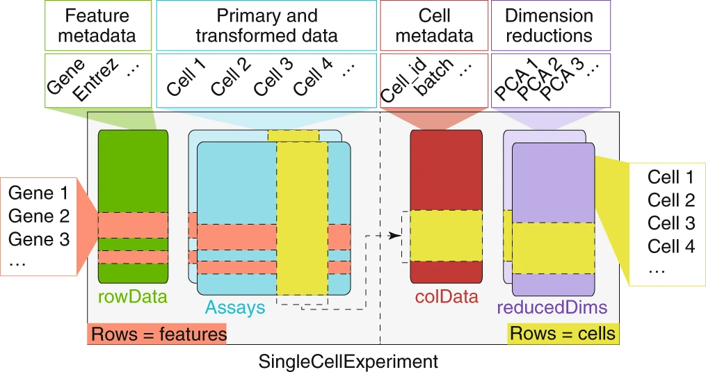
Create a SingleCellExperiment object ⌨️
A SingleCellExperiment object can be created from our sparse matrix using the SingleCellExperiment() function.
<- SingleCellExperiment (list (counts = mat))
class: SingleCellExperiment
dim: 62266 6075
metadata(0):
assays(1): counts
rownames(62266): ENSG00000290825 ENSG00000223972 ...
ENSG00000210195 ENSG00000210196
rowData names(0):
colnames(6075): GCTGCAGTCCGATCTC ACTATGGAGGTCCCTG ...
ACGTAGGGTGACAGCA TCTCAGCTCGCCGAAC
colData names(0):
reducedDimNames(0):
mainExpName: NULL
altExpNames(0):
Exploring the SingleCellExperiment object ⌨️
The SingleCellExperiment object stores the gene x cell count matrix within assays().
# get list of assays assays (sce)
List of length 1
names(1): counts
# extract single assay assay (sce, "counts" )[1 : 4 , 1 : 4 ]
4 x 4 sparse Matrix of class "dgTMatrix"
GCTGCAGTCCGATCTC ACTATGGAGGTCCCTG
ENSG00000290825 . .
ENSG00000223972 . .
ENSG00000227232 . .
ENSG00000278267 . .
ATTTCTGTCTCTATGT TATCTGTAGGTGATAT
ENSG00000290825 . .
ENSG00000223972 . .
ENSG00000227232 . .
ENSG00000278267 . .
Exploring the SingleCellExperiment object ⌨️
assays (sce)$ counts[1 : 4 , 1 : 4 ]
4 x 4 sparse Matrix of class "dgTMatrix"
GCTGCAGTCCGATCTC ACTATGGAGGTCCCTG
ENSG00000290825 . .
ENSG00000223972 . .
ENSG00000227232 . .
ENSG00000278267 . .
ATTTCTGTCTCTATGT TATCTGTAGGTGATAT
ENSG00000290825 . .
ENSG00000223972 . .
ENSG00000227232 . .
ENSG00000278267 . .
Exploring the SingleCellExperiment object ⌨️
# convenience function for counts assay counts (sce)[1 : 4 , 1 : 4 ]
4 x 4 sparse Matrix of class "dgTMatrix"
GCTGCAGTCCGATCTC ACTATGGAGGTCCCTG
ENSG00000290825 . .
ENSG00000223972 . .
ENSG00000227232 . .
ENSG00000278267 . .
ATTTCTGTCTCTATGT TATCTGTAGGTGATAT
ENSG00000290825 . .
ENSG00000223972 . .
ENSG00000227232 . .
ENSG00000278267 . .
Manipulating a SingleCellExperiment ⌨️
Calculate the total number of counts in each cell and store these counts in the `colData().*
$ total_counts <- colSums (counts (sce))
Manipulating a SingleCellExperiment ⌨️
Calculate the total number of counts for each gene, summed across cells
Calculate the number of cells with > 0 counts per gene
store both of these values in the rowData().
rowData (sce)$ total_gene_counts <- rowSums (counts (sce))rowData (sce)$ n_cells_expr <- rowSums (counts (sce) > 0 )rowData (sce)
DataFrame with 62266 rows and 2 columns
total_gene_counts n_cells_expr
<numeric> <integer>
ENSG00000290825 65.594607 43
ENSG00000223972 0.000000 0
ENSG00000227232 5.506349 24
ENSG00000278267 0.000000 0
ENSG00000243485 0.333333 1
... ... ...
ENSG00000198695 2054 1509
ENSG00000210194 0 0
ENSG00000198727 274421 5704
ENSG00000210195 0 0
ENSG00000210196 0 0
Manipulating a SingleCellExperiment ⌨️
We can subset the SingleCellExperiment using the same techniques as base R data.
Note that dplyr verbs do not work with SingleCellExperiment
Manipulating a SingleCellExperiment ⌨️
We can subset the SingleCellExperiment using the same techniques as base R data.
Note that dplyr verbs do not work with SingleCellExperiment
# subset to data from first 4 genes and cells 1 : 4 , 1 : 4 ]# subset to cells from PBMC cells $ cell_source == "PBMC" ]<- c ("ENSG00000223972" , "ENSG00000210195" , "ENSG00000210196" )<- c ("ACTATGGAGGTCCCTG" , "GCTGCAGTCCGATCTC" , "TCTCAGCTCGCCGAAC" )
Manipulating a SingleCellExperiment
ncol(): # of cells nrow(): # of gene dims(): # of genes and cells rownames(): rownames in matrices (e.g. genes) colnames(): colnames in matrices (e.g. cells) cbind(): combine multiple SingleCellExperiments by column rbind(): combine multiple SingleCellExperiments by row
Storing gene identifiers
Ensembl gene ids are the rownames of our matrix (e.g. ENSG00000289576, ENSG00000221539).
These identifiers are guaranteed to be unique and are more stable and reliable than gene symbols (e.g. ACTB, GAPDH).
This becomes important if you want to compare to external datasets or ensure that your data can be easily used by others in the future.
But they aren’t easy to interpret
Storing gene identifiers ⌨️
# download ensembl database <- ah[["AH113665" ]]<- mapIds (keys = rownames (sce),keytype = "GENEID" ,column = "SYMBOL" rowData (sce)$ gene <- gene_namesrowData (sce)$ gene_id <- rownames (sce)rowData (sce)
DataFrame with 62266 rows and 4 columns
total_gene_counts n_cells_expr gene
<numeric> <integer> <character>
ENSG00000290825 65.594607 43 DDX11L2
ENSG00000223972 0.000000 0 DDX11L1
ENSG00000227232 5.506349 24 WASH7P
ENSG00000278267 0.000000 0 MIR6859-1
ENSG00000243485 0.333333 1 MIR1302-2HG
... ... ... ...
ENSG00000198695 2054 1509 MT-ND6
ENSG00000210194 0 0 MT-TE
ENSG00000198727 274421 5704 MT-CYB
ENSG00000210195 0 0 MT-TT
ENSG00000210196 0 0 MT-TP
gene_id
<character>
ENSG00000290825 ENSG00000290825
ENSG00000223972 ENSG00000223972
ENSG00000227232 ENSG00000227232
ENSG00000278267 ENSG00000278267
ENSG00000243485 ENSG00000243485
... ...
ENSG00000198695 ENSG00000198695
ENSG00000210194 ENSG00000210194
ENSG00000198727 ENSG00000198727
ENSG00000210195 ENSG00000210195
ENSG00000210196 ENSG00000210196
Updating our rownames ⌨️
Goal rename rownames to symbols
Problem, some are NA, or duplicated
uniquifyFeatureNames() is a convenience function that will rename gene symbols that are NA or duplicated values to the ensembl ID or a combination of gene symbol and ensembl ID
rownames (sce) <- uniquifyFeatureNames (rowData (sce)$ gene_id,rowData (sce)$ genehead (rownames (sce))
[1] "DDX11L2_ENSG00000290825" "DDX11L1"
[3] "WASH7P" "MIR6859-1"
[5] "MIR1302-2HG" "MIR1302-2"
Filtering low quality cells ⌨️
Next we perform some filtering and quality control to remove low expression genes and poor quality cells.
Our SingleCellExperiment has 62266 genes in the matrix. Most of these are not expressed. We want to exclude these genes as they won’t provide any useful data for the analysis.
# exclude genes expressed in fewer than 10 cells (~ 1% of cells) rowData (sce)$ n_cells <- rowSums (counts (sce) > 0 )<- sce[rowData (sce)$ n_cells >= 10 , ]
class: SingleCellExperiment
dim: 20858 6075
metadata(0):
assays(1): counts
rownames(20858): DDX11L2_ENSG00000290825 WASH7P ...
MT-ND6 MT-CYB
rowData names(5): total_gene_counts n_cells_expr gene
gene_id n_cells
colnames(6075): GCTGCAGTCCGATCTC ACTATGGAGGTCCCTG ...
ACGTAGGGTGACAGCA TCTCAGCTCGCCGAAC
colData names(2): cell_source total_counts
reducedDimNames(0):
mainExpName: NULL
altExpNames(0):
Filtering low quality cells
To exclude low-quality cells we will use the following metrics:
Number of counts per cell barcode
Number of genes detected per barcode
The percentage of counts from mitochondrial genes per barcode
A low number of counts, a low number of detected genes, and a high percentage of mitochondrial counts suggests that the cell had a broken membrane and the cytoplasmic mRNA leaked out.
Filtering low quality cells ⌨️
To calculate these metrics we can use addPerCellQCMetrics from scater. Mitochondrial genes are named with a common “MT-” prefix (e.g. MT-CO2, MT-ATP6, MR-RNR2), which we can use to identify them.
# identify subset of genes that are from mitochondrial genome <- startsWith (rowData (sce)$ gene, "MT-" )<- addPerCellQCMetrics (sce, subsets = list (Mito = is_mito))colData (sce)
DataFrame with 6075 rows and 8 columns
cell_source total_counts sum
<character> <numeric> <numeric>
GCTGCAGTCCGATCTC PBMC 31924 31908.0
ACTATGGAGGTCCCTG PBMC 35845 35801.5
ATTTCTGTCTCTATGT PBMC 31788 31758.3
TATCTGTAGGTGATAT PBMC 32025 31998.0
AGCCAGCCAAAGCACG PBMC 29882 29856.0
... ... ... ...
CATCCCAAGTACTCGT PBMC 151 151.000
CTCCTCCCATGAAGCG PBMC 133 132.500
AGTTCCCCATGTCAGT PBMC 173 172.667
ACGTAGGGTGACAGCA PBMC 255 253.000
TCTCAGCTCGCCGAAC PBMC 144 144.000
detected subsets_Mito_sum
<integer> <numeric>
GCTGCAGTCCGATCTC 5718 2668.49
ACTATGGAGGTCCCTG 6073 3963.23
ATTTCTGTCTCTATGT 6377 2496.33
TATCTGTAGGTGATAT 6260 2961.15
AGCCAGCCAAAGCACG 5746 2660.44
... ... ...
CATCCCAAGTACTCGT 132 12
CTCCTCCCATGAAGCG 131 6
AGTTCCCCATGTCAGT 166 8
ACGTAGGGTGACAGCA 217 13
TCTCAGCTCGCCGAAC 149 4
subsets_Mito_detected subsets_Mito_percent
<integer> <numeric>
GCTGCAGTCCGATCTC 13 8.36307
ACTATGGAGGTCCCTG 15 11.07002
ATTTCTGTCTCTATGT 15 7.86038
TATCTGTAGGTGATAT 15 9.25417
AGCCAGCCAAAGCACG 15 8.91092
... ... ...
CATCCCAAGTACTCGT 5 7.94702
CTCCTCCCATGAAGCG 5 4.52830
AGTTCCCCATGTCAGT 6 4.63320
ACGTAGGGTGACAGCA 6 5.13834
TCTCAGCTCGCCGAAC 2 2.77778
total
<numeric>
GCTGCAGTCCGATCTC 31908.0
ACTATGGAGGTCCCTG 35801.5
ATTTCTGTCTCTATGT 31758.3
TATCTGTAGGTGATAT 31998.0
AGCCAGCCAAAGCACG 29856.0
... ...
CATCCCAAGTACTCGT 151.000
CTCCTCCCATGAAGCG 132.500
AGTTCCCCATGTCAGT 172.667
ACGTAGGGTGACAGCA 253.000
TCTCAGCTCGCCGAAC 144.000
Filtering low quality cells ⌨️
We can use the plotColData() function from scater to plot various metrics (as a ggplot2 object).
plotColData (sce, y = "sum" )
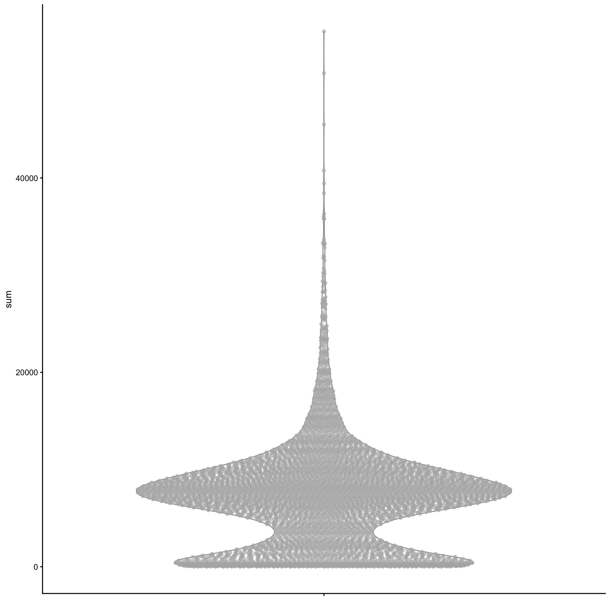
Filtering low quality cells ⌨️
We can use the plotColData() function from scater to plot various metrics (as a ggplot2 object).
plotColData (sce, y = "detected" )
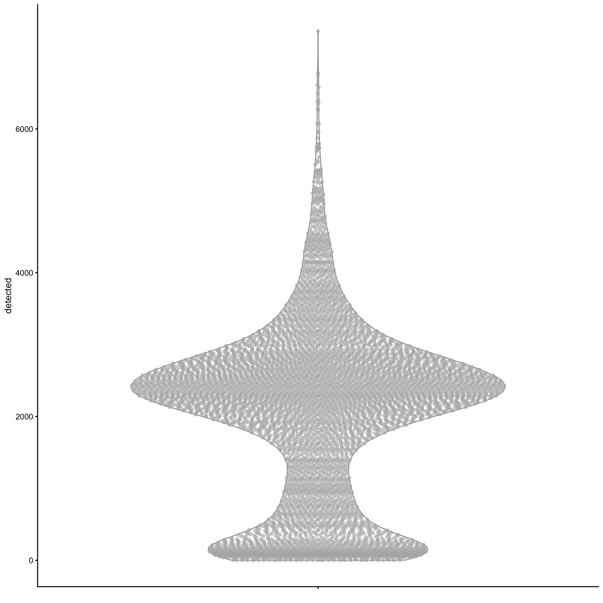
Filtering low quality cells ⌨️
We can use the plotColData() function from scater to plot various metrics (as a ggplot2 object).
plotColData (sce, y = "detected" , x = "sum" , colour_by = "subsets_Mito_percent" )
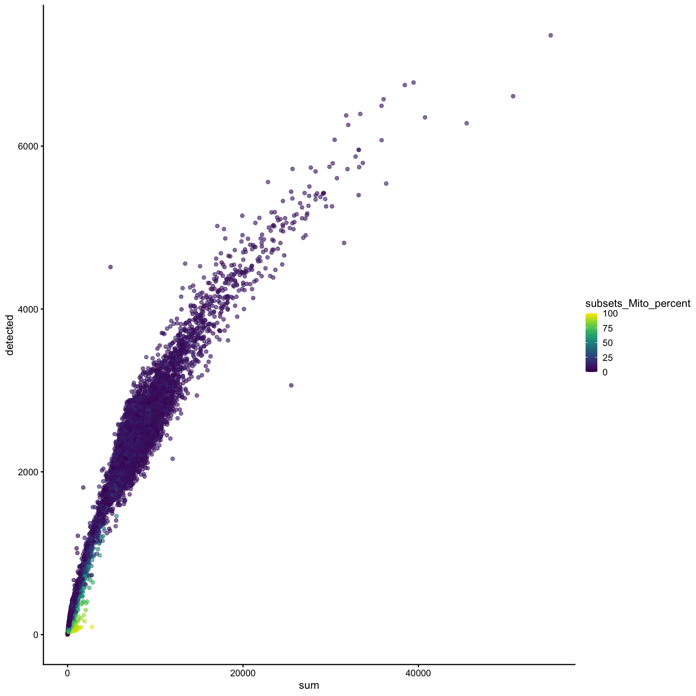
Filtering low quality cells ⌨️
We can use the plotColData() function from scater to plot various metrics (as a ggplot2 object).
plotColData (sce, y = "subsets_Mito_percent" , x = "sum" ) + labs (x = "# of counts" )
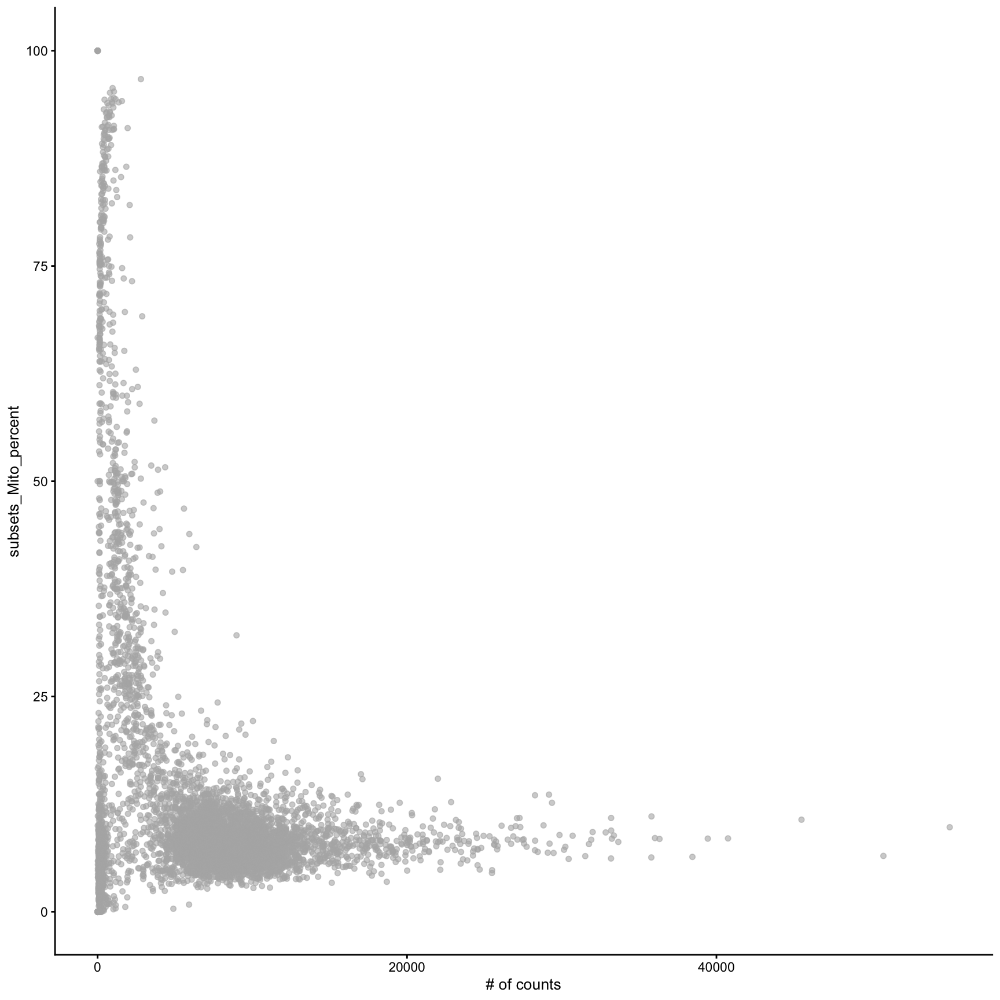
Filtering low quality cells ⌨️
We can also extract colData as a dataframe to make custom ggplot2 plots
<- as.data.frame (colData (sce))ggplot (cell_info, aes (sum, subsets_Mito_percent)) + geom_point ()
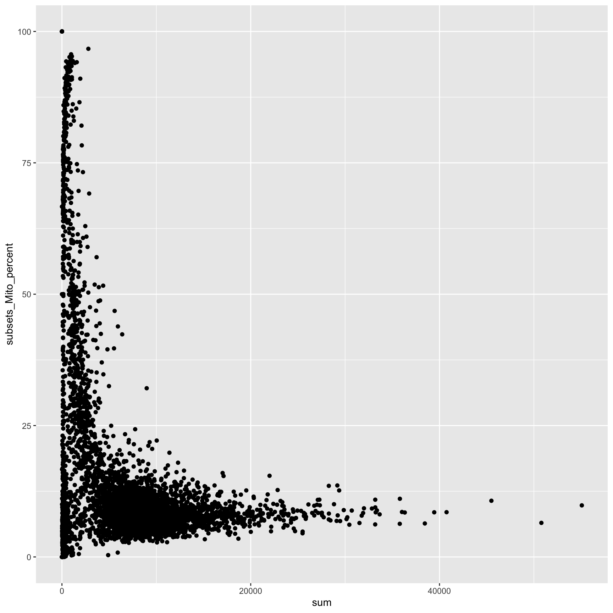
Filtering low quality cells ⌨️
Selecting an appropriate cutoff can be somewhat arbitrary
Risk of excluding meaningful cell populations.
Start with lenient cutoffs, then later increasing the stringency after examining the clustering and cell types.
How many cells pass these criteria?
<- sce$ subsets_Mito_percent < 20 & $ detected > 500 & $ sum > 1000
How many cells pass these criteria?
Filtering low quality cells ⌨️
Visualizing qc failed cells ⌨️
$ pass_qc <- sce$ subsets_Mito_percent < 20 & $ detected > 500 & $ sum > 1000 plotColData (sce, y = "subsets_Mito_percent" , x = "sum" , colour_by = "pass_qc" ) + labs (x = "# of counts" )
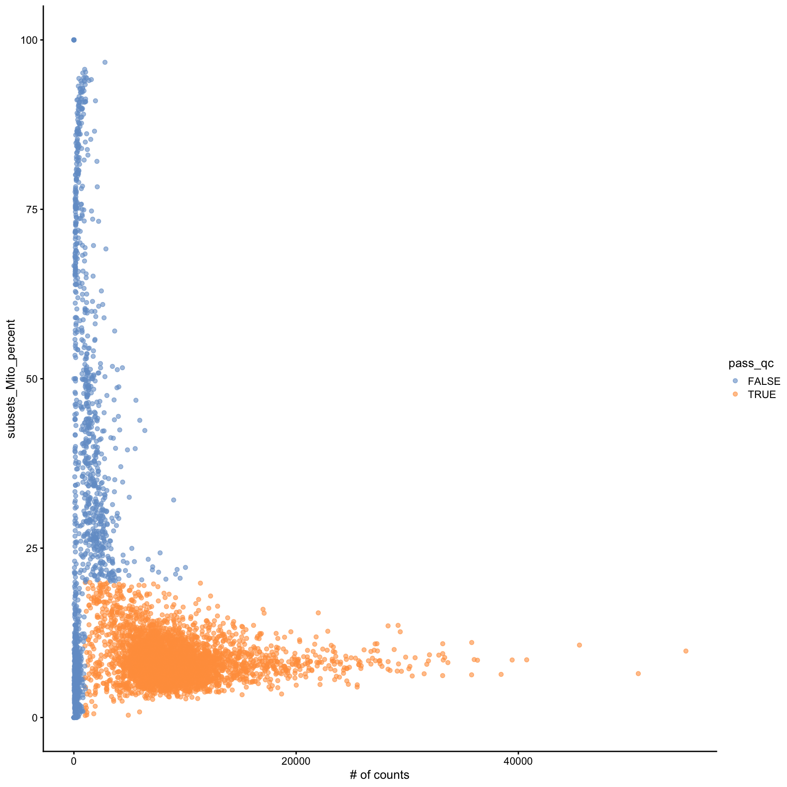
Remove low quality cells ⌨️
Lastly we can subset the SingleCellExperiment to exclude the low-quality cells.
<- sce[, sce$ pass_qc]
class: SingleCellExperiment
dim: 20858 4565
metadata(0):
assays(1): counts
rownames(20858): DDX11L2_ENSG00000290825 WASH7P ...
MT-ND6 MT-CYB
rowData names(6): total_gene_counts n_cells_expr ...
n_cells subsets_Mito
colnames(4565): GCTGCAGTCCGATCTC ACTATGGAGGTCCCTG ...
CTGGATCCACCGTACG TACAACGGTCTCGCGC
colData names(9): cell_source total_counts ... total
pass_qc
reducedDimNames(0):
mainExpName: NULL
altExpNames(0):
Analysis workflow
flowchart LR
%% Green nodes
load["Import data<br/>tximport::tximport()<br/>SingleCellExperiment()<br/>counts()"]
%% Blue nodes
cell_qc["QC cells<br/>addPerCellQCMetrics()<br/>plotColData()"]
norm["Normalize UMI counts<br/>quickCluster()<br/>computeSumFactors()<br/>logNormCounts()"]
markers["Discover cell type markers<br/>scoreMarkers()"]
annot["Annotate cell types<br/>clustifyr and SingleR"]
%% Yellow nodes
feature["Identify variable genes<br/>modelGeneVarByPoisson()<br/>getTopHVGs()"]
dim_red["Dimensionality reduction via PCA<br/>runPCA()"]
cluster["Clustering<br/>clusterCells()"]
viz["Make 2D-Visualization<br/>runUMAP()"]
%% Main workflow connections
load --> cell_qc
cell_qc --> norm
norm --> feature
norm --> markers
feature --> dim_red
dim_red --> cluster
dim_red --> viz
cluster --> markers
markers --> annot
%% Feedback loops (dashed grey)
annot -.-> cell_qc
annot -.-> feature
annot -.-> dim_red
annot -.-> cluster
%% Styling
classDef green fill:#009E73,stroke:#000,stroke-width:1px,color:#000
classDef blue fill:#56B4E9,stroke:#000,stroke-width:1px,color:#000
classDef yellow fill:#F0E442,stroke:#000,stroke-width:1px,color:#000
class load green
class cell_qc,norm,markers,annot blue
class feature,dim_red,cluster,viz yellow
Normalization ⌨️
Normalization attempts to correct for technical biases that will distort biological signal in the data.
A large source of variation arises due to differences in sequencing depth between cells.
This can be seen by performing PCA on the unnormalized counts.
We will use runPCA from scater to perform PCA.
# set seed for functions with a randomized component # to obtain the same result each execution set.seed (42 )<- runPCA (sce, exprs_values = "counts" , name = "count_PCA" )
Normalization ⌨️
We can now visualize this PCA
plotReducedDim (sce, "count_PCA" , colour_by = "sum" )
Note that PC1 is correlated with the total UMI counts (sum), meaning that the largest source of variation is related to differences in sequencing depth rather than biological differences between cells.
Normalization ⌨️
<- makePerCellDF (sce, c ("count_PCA" , "sum" ))ggplot (plot_df, aes (count_PCA.1 , sum)) + geom_point ()
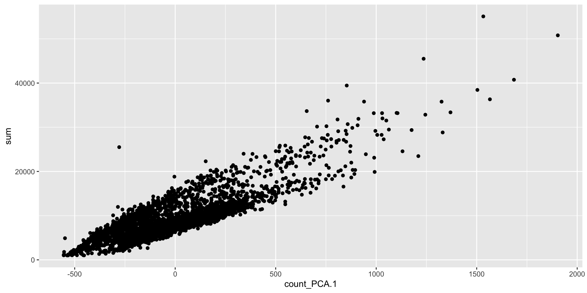
Normalization ⌨️
Crude clustering to group related cells
Identifying a cell-specific normalization factor (size factor)
Scaling the counts by this factor
log transforming the data (base 2 with a pseudocount).
set.seed (42 )<- quickCluster (sce)<- computeSumFactors (sce, clusters = clusters)<- logNormCounts (sce)
Normalization ⌨️
Plot the PCA with normalization
set.seed (42 )<- runPCA (sce, exprs_values = "logcounts" , name = "PCA" )plotReducedDim (sce, "PCA" , colour_by = "sum" )
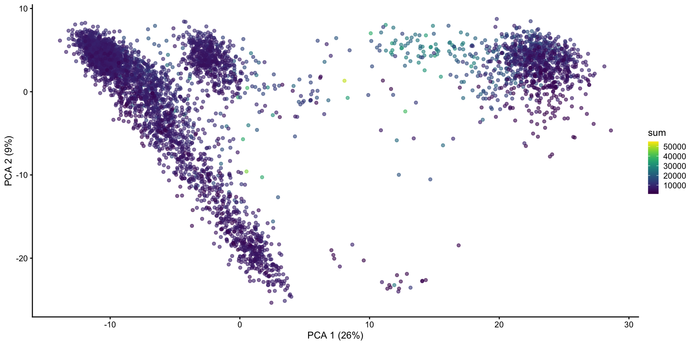
Normalization ⌨️
<- makePerCellDF (sce, c ("PCA" , "sum" ))ggplot (plot_df, aes (PCA.1 , sum)) + geom_point ()
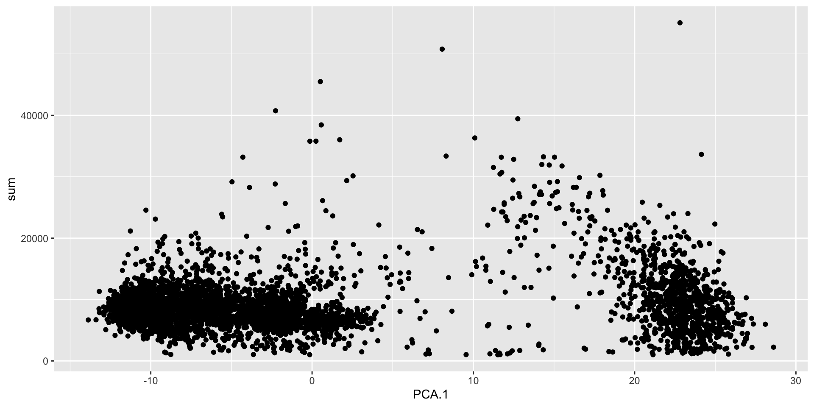
PC1 no longer correlates with UMI counts.